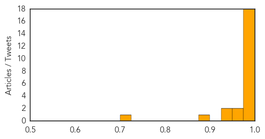

MERS
30-Day Web Trend
23 alerts, 0 warnings

30-Day Twitter Trend
6 alerts, 0 warnings

Article Locations

Article Confidences
Top Articles:
- 1.000
- Middle East respiratory syndrome coronavirus (MERS-CoV) – update
- 1.000
- Egypt Reports First Case Of MERS CoV Infection
- 0.999
- Ministry goes on alert for Mers virus
- 0.999
- Egypt Reports First Case of MERS-CoV
- 0.998
- New coronavirus case reported in Jordan
- 0.998
- Lessons learned: How SARS could prevent a MERS virus outbreak
- 0.996
- Nat’l ID system needed to track victims faster
- 0.996
- MERS Watch: 100 Cases in a Month
- 0.995
- Jordan records two new MERS infections
- 0.995
- Saudis report 10 more MERS cases; Jordan adds one
- 0.993
- Saudi Arabia finds 26 more cases of deadly MERS
- 0.992
- Two new Mers infection cases recorded in Jordan
- 0.988
- Jordan records two new MERS infections
- 0.988
- [Graphic News] MERS virus spreading
- 0.987
- Two new MERS virus cases reported in Jordan
- 0.987
- Jordan records two new MERS cases, bringing total infections to seven, Middle East News & Top Stories
- 0.986
- Health ministry in Egypt requested citizens to avoid travel to Saudi Arabia due to deadly MERS virus
- 0.977
- Saudi Arabia reports 26 new MERS cases
- 0.968
- On MERS-COV, DOH to public: Stop sowing false info
- 0.963
- Mers vaccine helps mice fight off deadly virus (Wired UK)
- 0.947
- Egypt urges pilgrims to delay Hajj due to MERS outbreak
- 0.938
- Mers Alert: Expert says avoid close contact with camels
- 0.879
- Virus Kills Millions of American Pigs, Pushing Up Pork Prices
- 0.709
- No early summer break for schoolsEducation
Top Tweets:
-
No tweets found for May 01, 2014